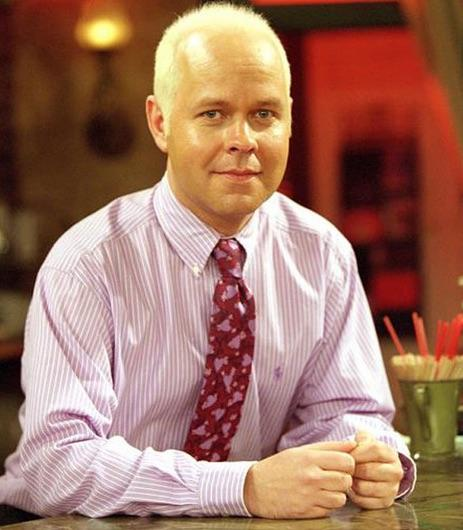
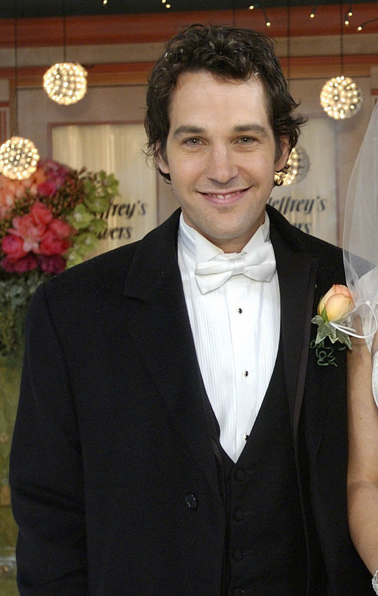

James Michael Tyler as Gunther
Een van de meest voorkomende guest star is James Michael Tyler als Gunther. Gunther is de 'manager' van het koffiehuis, Central Perk. Hij is erg verliefd op rachel maar durft het pas in een van de laatste afleveringen te zeggen. Hij is te zien als Gunther in elk seizoen, maar hij heeft pas voor het eerst tekst in aflevering 33. Gunther staat ook vooral bekend om zijn witblonde haar, dat volgens de karakters in de show erg 'sexy' is. In de serie zelf is hij ook van nederlanse afkomst en spreekt hij in 1 aflevering zelfs nederlands.Paul Rudd as Mike Hannigan
Jaja, zelfs Paul Rudd komt voor in de bekende serie Friends als Mike Hannigan. Hij komt pas voor het eerst op het scherm in seizoen 9. Mike Hannigan is de man waarmee Phoebe uiteindelijk zal trouwen, maar dat gaat niet al te eenvoudig. We hebben Paul Rudd voor het eerst in de serie gezien omdat Joey was vergeten een date te regelen voor zijn dubbel date met Phoebe. Omdat hij dit was vergeten ging hij naar Central Perk en begon daar naar Mike te roepen. Phoebe kwam daar achter en werd woedend, maar Mike wilde zo graag een date met haar dat hij Phoebe weer kwam opzoeken in Central Perk. Het gaat ook weer uit tussen Phoebe en Mike omdat hij niet meer wilde trouwen. Maar als hij erachter komt dat een andere man een aanzoek aan Phoebe gaat doen wint hij haar toch weer terug. Uiteindelijk trouwen ze in seizoen 10.Voor een lijst met alle Guest stars Klik hier!